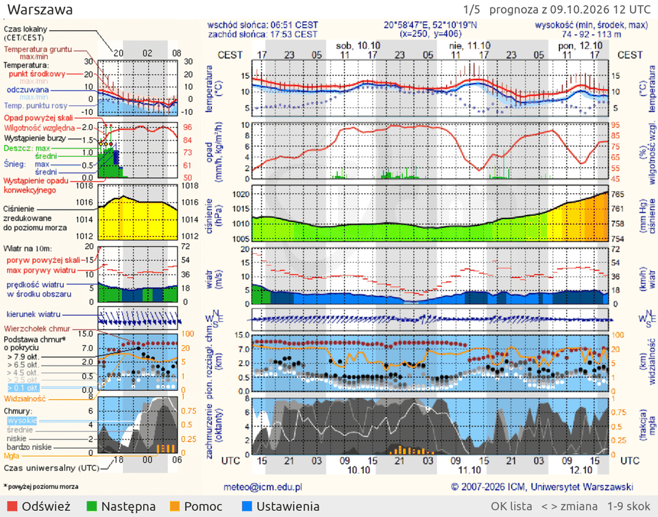
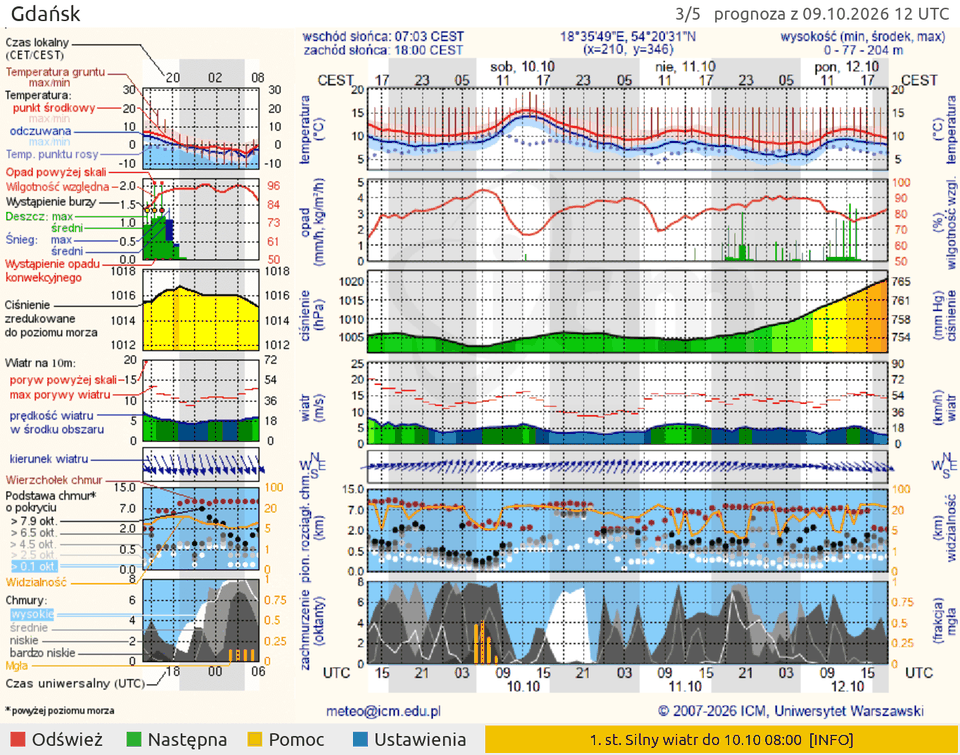
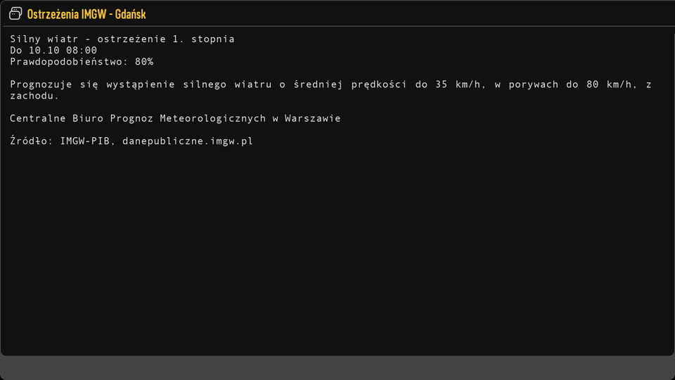
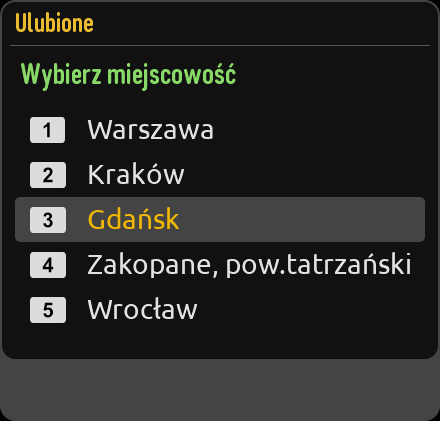
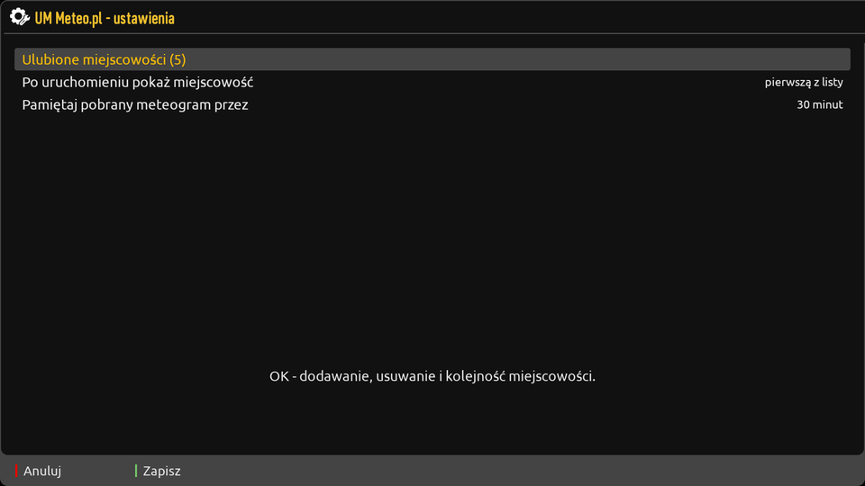
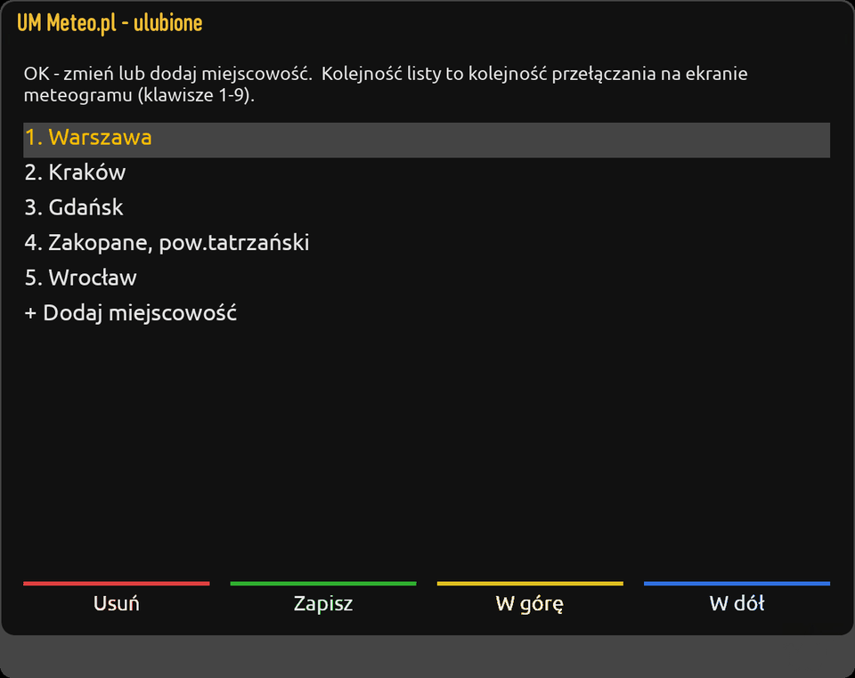
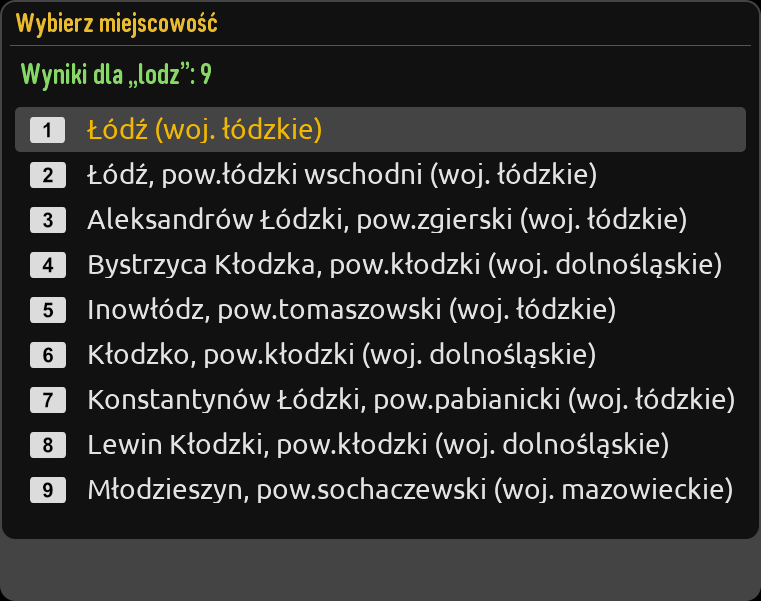

UM Meteo.pl dla enigmy2
Meteogram modelu UM z meteo.pl (ICM, Uniwersytet Warszawski) dla listy ulubionych miejscowości, razem z ostrzeżeniami meteorologicznymi IMGW-PIB dla ich powiatu.
Instalacja
Wymaga obrazu enigma2 z Pythonem 3 (np. OpenPLi, openATV). Na dekoderze, przez telnet albo ssh jako root:
wget -qO- https:///install.sh | sh Jeśli wget z BusyBoxa zgłasza błąd TLS, użyj curl albo Pythona:
curl -fsSL https:///install.sh | sh python3 -c "import urllib.request as u; print(u.urlopen('https:///install.sh').read().decode())" | sh Na koniec zrestartuj GUI (Menu > Czuwanie > Restart GUI). Wtyczka „UM Meteo.pl” pojawi się w menu wtyczek i w menu rozszerzeń. Później aktualizuje się sama.
Skrypt pobiera UMMeteoPL.tar.gz z tego serwera, sprawdza jego sumę SHA-256
i podmienia katalog wtyczki. Ustawień nie rusza, a listę ulubionych ze starych wersji (meteo.ini) przenosi.
Meteogram

- 2358 miejscowości ze wszystkich województw, z wyszukiwarką, w której wielkość liter i polskie znaki nie mają znaczenia
- przełączanie miejscowości strzałkami, CH+/CH−, klawiszami 1–9 albo z listy; pobrane meteogramy są pamiętane, więc powrót jest natychmiastowy
- skórka skalowana do rozdzielczości (HD, FullHD, 4K); ustawienia rysuje skórka dekodera, więc wyglądają jak systemowe
- tylko Python 3 i enigma: bez
requests, PIL czy ImageMagick
Ostrzeżenia IMGW
Gdy dla powiatu wybranej miejscowości obowiązuje albo jest zapowiedziane ostrzeżenie, pasek w stopce pokazuje najpoważniejsze z nich w kolorze stopnia (żółty, pomarańczowy, czerwony). INFO otwiera pełną treść wszystkich.


Ulubione i ustawienia




W ustawieniach wybiera się, czy wtyczka startuje od pierwszej czy od ostatnio oglądanej miejscowości,
jak długo pamiętać pobrany meteogram i czy aktualizować się automatycznie. Ustawienia są zapisywane
w /etc/enigma2/settings (config.plugins.UMMeteoPL.*), więc przetrwają
aktualizację wtyczki i trafiają do kopii zapasowej ustawień.
Pilot
| Klawisz | Ekran meteogramu |
|---|---|
| ◀ ▶, CH+ / CH−, ZIELONY | poprzednia / następna miejscowość |
| 1–9, 0 | skok do pozycji z listy, 0 = pierwsza |
| OK, LIST | lista ulubionych |
| CZERWONY | odśwież (z pominięciem pamięci) |
| MENU, NIEBIESKI | ustawienia |
| INFO | szczegóły ostrzeżeń IMGW (bez ostrzeżeń: pomoc) |
| ŻÓŁTY | pomoc |
| EXIT | wyjście |
W edytorze ulubionych: OK zmienia albo dodaje miejscowość, CZERWONY usuwa, ŻÓŁTY / NIEBIESKI przesuwa, ZIELONY zapisuje. EXIT z niezapisanymi zmianami pyta, co zrobić.
Aktualizacje
Przy każdym otwarciu wtyczka sprawdza w tle plik version na tym serwerze.
Gdy jest tam inna wersja niż zainstalowana, pobiera install.sh, sprawdza jego sumę, instaluje
nową wersję i pyta, czy zrestartować GUI. Wyłącza się to w ustawieniach („Aktualizuj automatycznie”).
Ręcznie aktualizuje się tym samym poleceniem co przy instalacji.
Skąd są dane
- Meteogram: meteo.pl, model UM. Serwer dokleja nad wykresem baner, który wtyczka odcina, dzięki czemu wykres pokrywa się z legendą.
- Ostrzeżenia: publiczne API IMGW-PIB
danepubliczne.imgw.pl/api/data/warningsmeteo, sprawdzane co 10 minut. - Powiat miejscowości: tabela id meteo.pl → kod TERYT powiatu, zbudowana z państwowego rejestru granic PRG (GUGiK).